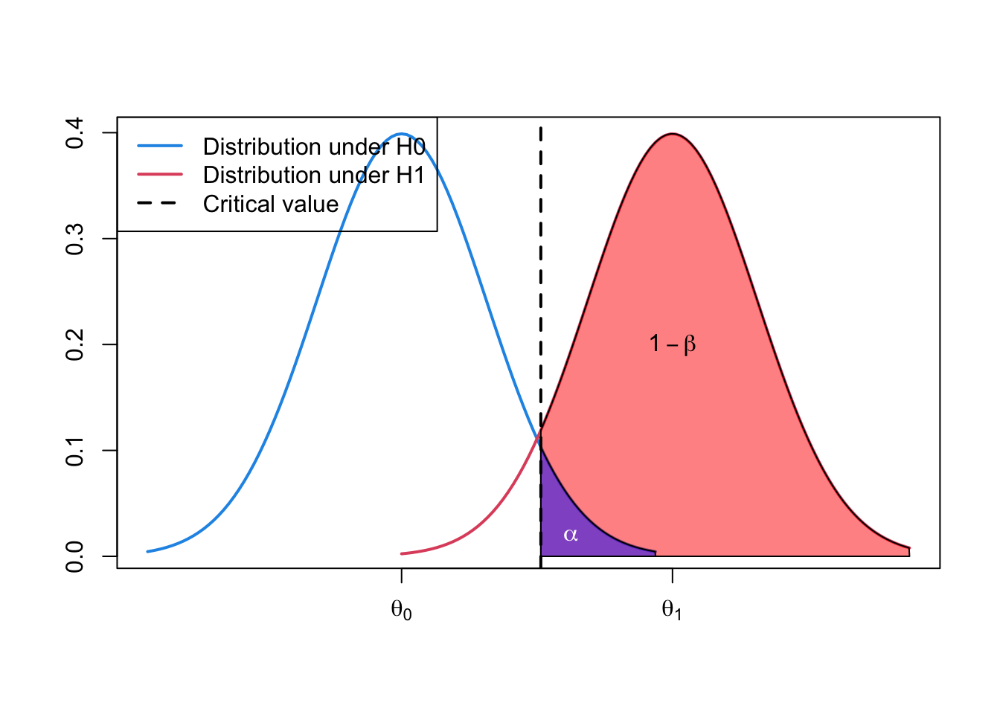
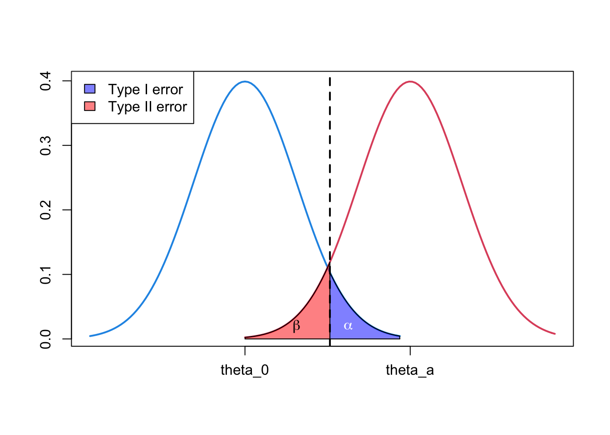
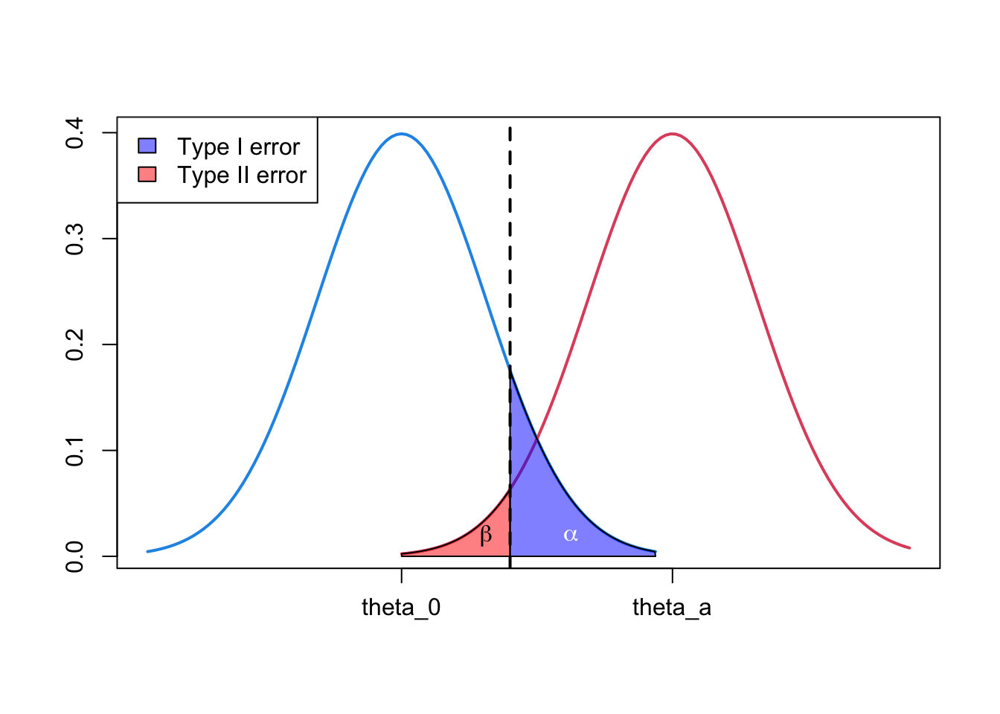
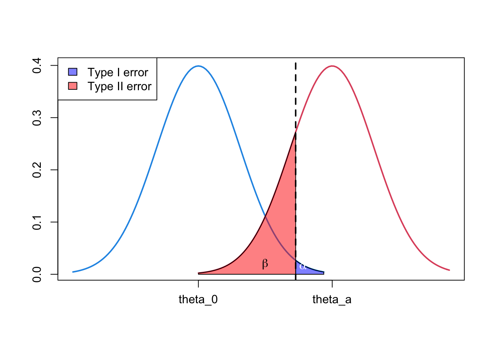
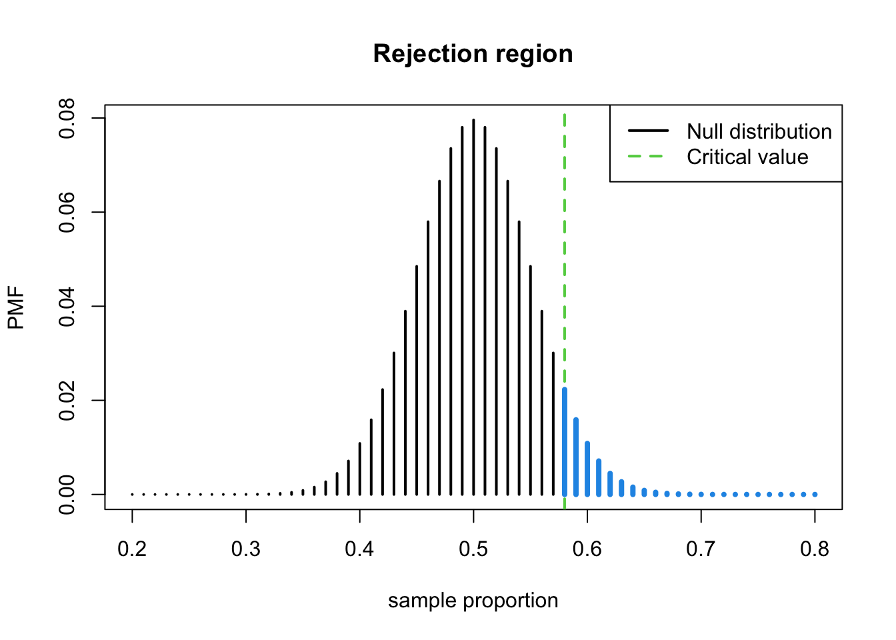
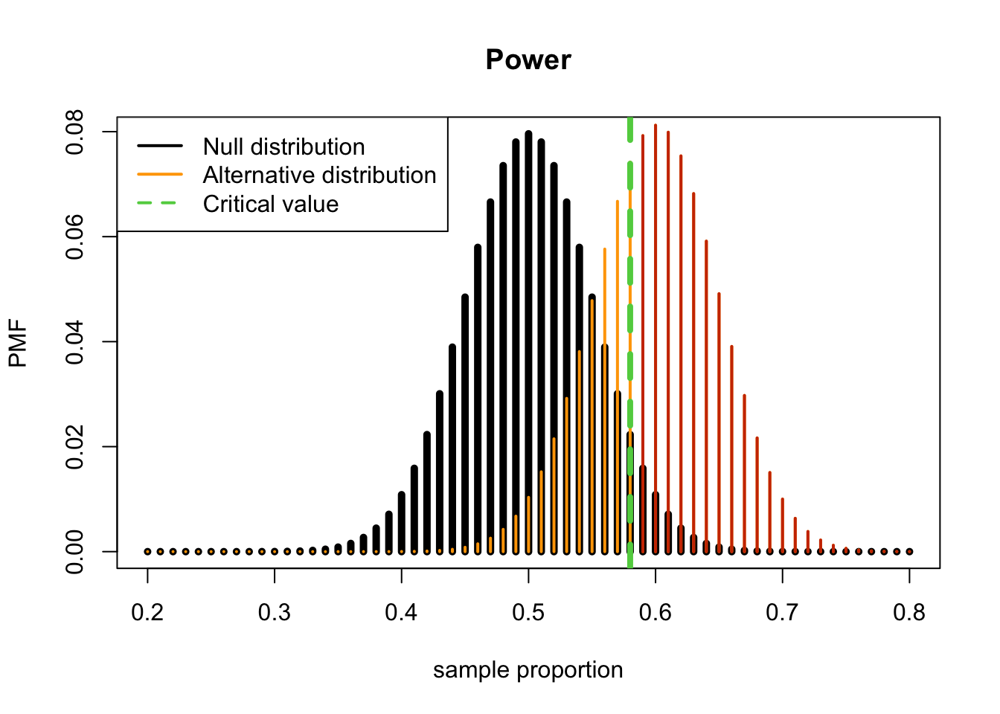
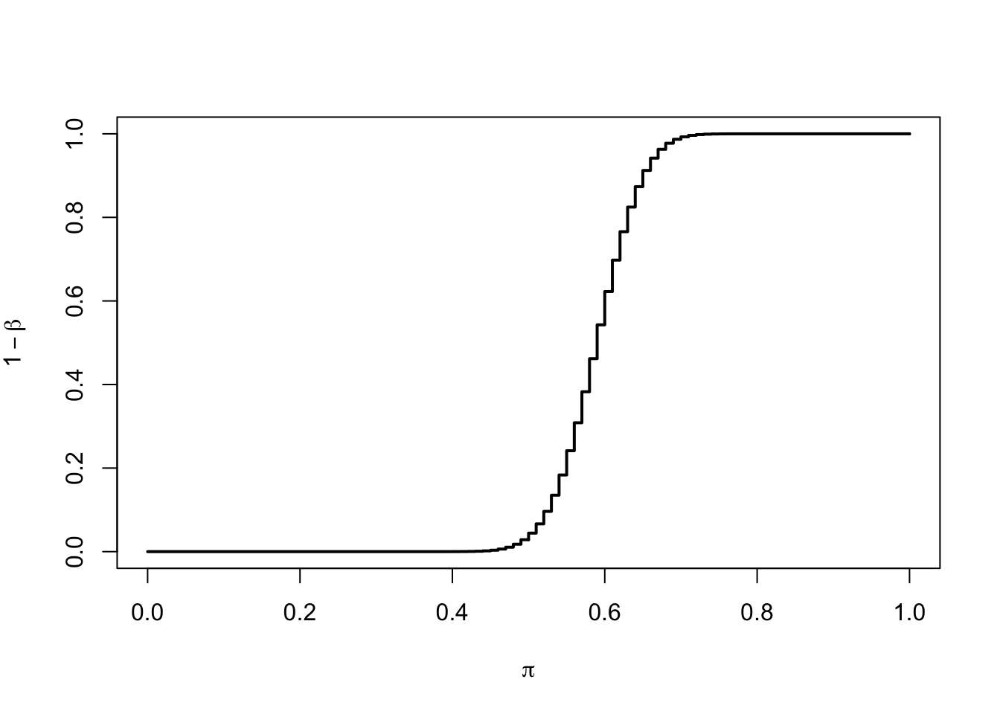
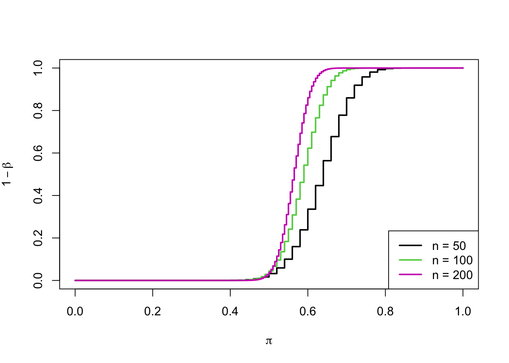

| Test vs. truth | \(H_0\) is true | \(H_0\) is false |
|---|---|---|
| Reject \(H_0\) | Type I error | Correct |
| Do not reject \(H_0\) | Correct | Type II error |
\[ \alpha=\operatorname{Pr}\left(\text { Reject } H_{0} \mid H_{0} \text { is true }\right) \]
We can control the probability of a type I error by setting the significance level, \(\alpha\).
The definition of type II error is:
\[ \beta=\operatorname{Pr}\left(\text { Do not reject } H_{0} \mid H_{0} \text { is false }\right) \]
Study design 단계에서부터 필요한 sample size를 구하고 들어오면, type I and type II error 모두 control 가능함
\[ 1-\beta=\operatorname{Pr}\left(\text { Reject } H_{0} \mid H_{0} \text { is false }\right)=\text { power } \]
| Test vs. Truth | \(H_0\) is true | \(H_0\) is false |
|---|---|---|
| Reject \(H_0\) | \(\alpha\) (Type I error) | \(1-\beta\) (Power) |
| Do not reject \(H_0\) | \(1-\alpha\) | \(\beta\) (Type II error) |
curve(dnorm, from = -3, to = 3,
xlim = c(-3, 6),
lwd = 2, col = 4,
axes = F, xlab = NA, ylab = NA)
curve(dnorm(x, mean = 3.2),
add = TRUE, col = 2, lwd = 2, from = 0, to = 6)
coord.x <- c(qnorm(0.95), seq(qnorm(0.95), 6, by = 0.01), 6)
coord.y <- c(0, dnorm(coord.x[-c(1, length(coord.x))], mean = 3.2), 0)
polygon(coord.x, coord.y, col = rgb(1, 0, 0, 0.5))
coord.x <- c(qnorm(0.95), seq(qnorm(0.95), 3, by = 0.01), 3)
coord.y <- c(0, dnorm(coord.x[-c(1, length(coord.x))]), 0)
polygon(coord.x, coord.y, col = rgb(0, 0, 1, 0.5))
abline(v = qnorm(0.95), lty = 2, lwd = 2)
text(3.2, 0.2, labels = expression(1 - beta))
text(2, 0.02, labels = expression(alpha), col = "white")
axis(1, at = c(0, 3.2), labels = c(expression(theta[0]), expression(theta[1])))
axis(2)
box()
legend("topleft",
c("Distribution under H0",
"Distribution under H1",
"Critical value"),
bg = "transparent",
lty = c(1, 1, 2),
col = c(4, 2, 1), lwd = 2)
curve(dnorm, from = -3, to = 3,
xlim = c(-3, 6),
lwd = 2, col = 4, axes = FALSE,
xlab = NA, ylab = NA)
curve(dnorm(x, mean = 3.2),
add = TRUE, col = 2, lwd = 2,
from = 0, to = 6)
coord.x <- c(qnorm(0.95), seq(qnorm(0.95), 0, by = -0.01), 0)
coord.y <- c(0, dnorm(coord.x[-c(1, length(coord.x))], mean = 3.2), 0)
polygon(coord.x, coord.y, col = rgb(1, 0, 0, 0.5))
coord.x <- c(qnorm(0.95), seq(qnorm(0.95), 3, by = 0.01), 3)
coord.y <- c(0, dnorm(coord.x[-c(1, length(coord.x))]), 0)
polygon(coord.x, coord.y, col = rgb(0, 0, 1, 0.5))
abline(v = qnorm(0.95), lty = 2, lwd = 2)
text(1, 0.02, labels = expression(beta))
text(2, 0.02, labels = expression(alpha), col = "white")
axis(1, at = c(0, 3.2),
labels = c(expression(theta_0), expression(theta_a)))
axis(2)
box()
legend("topleft",
c("Type I error", "Type II error"),
fill = c(rgb(0, 0, 1, 0.5),
rgb(1, 0, 0, 0.5)))
curve(dnorm, from=-3, to=3,
xlim=c(-3, 6), lwd=2, col=4,
axes=FALSE, xlab=NA, ylab=NA)
curve(dnorm(x, mean=3.2),
add=TRUE, col=2, lwd=2,
from=0, to=6)
coord.x <- c(qnorm(0.9), seq(qnorm(0.9), 0, by=-0.01), 0)
coord.y <- c(0, dnorm(coord.x[-c(1, length(coord.x))], mean=3.2), 0)
polygon(coord.x, coord.y, col=rgb(1, 0, 0, 0.5))
coord.x <- c(qnorm(0.9), seq(qnorm(0.9), 3, by=0.01), 3)
coord.y <- c(0, dnorm(coord.x[-c(1, length(coord.x))]), 0)
polygon(coord.x, coord.y, col=rgb(0, 0, 1, 0.5))
abline(v = qnorm(0.9), lty=2, lwd=2)
text(1, 0.02, labels = expression(beta))
text(2, 0.02, labels = expression(alpha), col = "white")
axis(1, at = c(0, 3.2), labels = c(expression(theta_0), expression(theta_a)))
axis(2)
box()
legend("topleft",
c("Type I error", "Type II error"),
fill = c(rgb(0, 0, 1, 0.5),
rgb(1, 0, 0, 0.5)))
curve(dnorm,
from=-3, to=3,
xlim=c(-3, 6), lwd=2, col=4,
axes=FALSE, xlab=NA, ylab=NA)
curve(dnorm(x, mean=3.2),
add=TRUE, col=2, lwd=2,
from=0, to=6)
coord.x <- c(qnorm(0.99), seq(qnorm(0.99), 0, by=-0.01), 0)
coord.y <- c(0, dnorm(coord.x[-c(1, length(coord.x))], mean=3.2), 0)
polygon(coord.x, coord.y, col=rgb(1, 0, 0, 0.5))
coord.x <- c(qnorm(0.99), seq(qnorm(0.99), 3, by=0.01), 3)
coord.y <- c(0, dnorm(coord.x[-c(1, length(coord.x))]), 0)
polygon(coord.x, coord.y, col=rgb(0, 0, 1, 0.5))
abline(v = qnorm(0.99), lty=2, lwd=2)
text(1.6, 0.02, labels = expression(beta))
text(2.5, 0.015, labels = expression(alpha), col = "white")
axis(1, at = c(0, 3.2), labels = c(expression(theta_0), expression(theta_a)))
axis(2)
box()
legend("topleft",
c("Type I error", "Type II error"),
fill = c(rgb(0, 0, 1, 0.5),
rgb(1, 0, 0, 0.5)))
y <- rbinom(100, 1, 0.5)\[ \operatorname{Pr}\left(Y>y_{1-\alpha} \mid H_{0}\right)=\alpha \]
(q <- qbinom(0.95, 100, 0.5))## [1] 58\[ \begin{array}{c}Y>58 \\ Y / 100>58 / 100 \\ P>0.58\end{array} \]
pi_0 <- 0.5
n <- 100
plot((20:80)/100,dbinom(20:80, n, pi_0),
type = "h",lwd=2,
main="Rejection region",
xlab = "sample proportion",
ylab="PMF")
abline(v = 0.58, lty=2, lwd=2, col=3)
lines((58:80)/100, dbinom(58:80,n, pi_0),
type = "h", lwd=4, col=4)
legend("topright",
c("Null distribution", "Critical value"),
lwd=2, lty=c(1, 2), col=c(1, 3))
\[ 1-\beta=\operatorname{Pr}\left(\text { Reject } H_{0}|H_{a})=\operatorname{Pr}\left(Y>58 \mid \pi_{a}=0.6\right)\right. \]
R: pbinom()(1 - pbinom(58, 100, 0.6)) %>% round(3)## [1] 0.623Therefore, the chance we will get a statistically significant result (meaning a \(p\)-value < \(\alpha=0.05\)) **if the alternative hypothesis is true (i.e. under the alternative hypothesis) (e.g. \(\pi_a=0.60\)) is 0.623.
The plot of power, the sum of the red bars for the \(H_a\) PMF is the power
pi.0 <- 0.5
pi.a <- 0.6
n <- 100
plot((20:80)/100,dbinom(20:80, n, pi.0),
type = "h",lwd=5, main="Power",
xlab = "sample proportion", ylab="PMF")
lines((20:80)/100,
dbinom(20:80,n, pi.a),
type = "h", lwd=2, col="orange")
lines((59:80)/100,
dbinom(59:80,n, pi.a),
type = "h", lwd=2, col="orangered3")
abline(v = 0.58, lty=2, lwd=4, col=3)
legend("topleft",
c("Null distribution",
"Alternative distribution",
"Critical value"),
lwd=2, lty=c(1, 1, 2),
col=c(1, "orange", 3))
Conclusion: We have 62.3% power to reject \(H_0: \pi=0.5\) when the true population proportion is \(\pi=0.60\) with a sample size of \(n\) and a 5% (one-sided) level of significance.
R function to calculate the power:
propTestPower() in the EnvStats
package.
library(EnvStats)## Warning: package 'EnvStats' was built under R version 4.0.5##
## Attaching package: 'EnvStats'## The following object is masked from 'package:MASS':
##
## boxcox## The following objects are masked from 'package:moments':
##
## kurtosis, skewness## The following objects are masked from 'package:stats':
##
## predict, predict.lm## The following object is masked from 'package:base':
##
## print.defaultapprox = F in
propTestPower().
approx = T will make the function use a normal
approximation to the binomial to determine the power.samplePower <- propTestPower(100,0.6, 0.5,
alpha=0.05,
sample.type = "one.sample",
alternative = "greater",
approx=FALSE)
samplePower## $power
## [1] 0.6225327
##
## $alpha
## [1] 0.04431304
##
## $q.critical.upper
## [1] 58
- We DO NOT use the values of the sample in any of our calculations.
- This means we can compute the power of a test BEFORE performing the experiment.
- The power is actually determined during study design.
- It is not particularly useful to determine power after you have your data.
- The power associated with a sample can be better conveyed by presenting the confidence interval for your estimate.
- If the confidence interval is wide, this means that the study did not have very high power.
R: the power of a range of values of \(\pi_a\)pi.a <- seq(0, 1, by = 0.01)
power <- 1 - pbinom(qbinom(0.95,100,0.5), 100, pi.a)
# Power curve with the sample size of n=100 for a population proportion
plot(pi.a, power,
type='s', lwd=2,
ylab=expression(1-beta),
xlab=expression(pi))
R: the plot of the power of a test as a function of
sample sizepi.a50 <- seq(0, 1, by = 0.02)
pi.a100 <- seq(0, 1, by = 0.01)
pi.a200 <- seq(0, 1, by = 1/200)
power50 <- 1 - pbinom(qbinom(0.95,50,0.5), 50, pi.a50)
plot(pi.a50, power50, type='s', ylab=expression(1-beta), xlab=expression(pi), lwd=2)
power100 <- 1 - pbinom(qbinom(0.95,100,0.5), 100, pi.a100)
lines(pi.a100, power100, type='s', col=3, lwd=2)
power200 <- 1 - pbinom(qbinom(0.95,200,0.5), 200, pi.a200)
lines(pi.a200, power200, type='s', col=6, lwd=2)
legend("bottomright", paste0("n = ", c(50,100,200)), lwd=2, col=c(1,3,6))
It is a moral obligation to:
- <1> collect a sample size large enough to be able to prove an effect if there is one.
- <2> collect a sample size small enough to avoid potentially harming many people.
R: propTestNsampleSize <- propTestN(0.65, 0.5, alpha = 0.01, power = 0.80,
sample.type = "one.sample",
alternative = "greater",
approx=FALSE)
sampleSize## $n
## [1] 114
##
## $power
## [1] 0.817283
##
## $alpha
## [1] 0.009405374
##
## $q.critical.upper
## [1] 69approx=F: the function compute the sample size
using the exact binomial.
approx=T: the function uses a normal approximation to
the binomial.propTestMdd in the EnvStats package is the
function to determine the minimum detectable difference
if the sample size \(n\) is known and
for a desired level of power.propDetectDiff <- propTestMdd(100, 0.50, alpha = 0.05, power = .9,
sample.type = "one.sample",
alternative = "greater",
approx=FALSE)
propDetectDiff## $delta
## [1] 0.1465346
##
## $power
## [1] 0.9
##
## $alpha
## [1] 0.04431304
##
## $q.critical.upper
## [1] 58propTestN().
propTestPower().
propTestMdd().